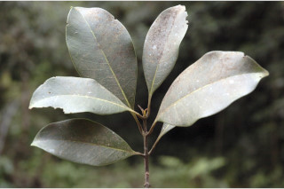
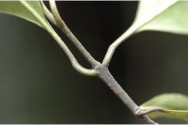
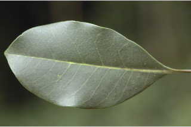

Images :





| Habit : | Trees up to 15 m tall. |
| Leaves : | Leaves simple , opposite , decussate ; petiole 2-3 cm long, planoconvex in cross section, glabrous ; lamina 8-15 x 4.5-5 cm, elliptic , apex acute , base attenuate , margin entire or slightly wavy , coriaceous , glabrous and paler beneath; midrib slightly canaliculate above; secondary_nerves 8-12 pairs, slender; tertiary_nerves broadly reticulate or obscure . |
| Inflorescence / Flower : | Inflorescence axillary , cymose panicles , 8 cm long, glabrous ; flowers pale yellow; pedicel 0.2 cm long. |
| Fruit and Seed : | Drupe , ellipsoid , oblique , up to 3.5 cm long, glabrous , purple when ripe; seed one. |